Arrested states: Glasses
Equilibrium means:
no change in entropy wirh time (zero entropy production)
no net flows of matter or energy
detailed balance \pi_i P_{i \rightarrow j} = \pi_j P_{j \rightarrow i}
time reversibility
state of maximum entropy given the constraints (we saw this in multiple instances, e.g. liquid crystals)
macroscopic obserbvables do not change with time (stationarity)
equivalence between time and ensemble averages (ergodicity)
Let’s focus a moment on ergodicity.
\overline{A} = \frac{1}{t_{obs}} \int_{0}^{t_{obs}} A(t) dt = \langle A \rangle
On the chalkboard, let’s list some issues that could arise during equilibration.
Phase space hard to explore
System gets stuck: the dynamics explores a local equilibrium region
Very slow evolution
The system keeps changing, it ages
Internal/external driving
Currents are generated and the system never equilibrates
Constrained dynamics
Some configurations are forbidden (constraints on the rules of motion) and non-ergodicity arises
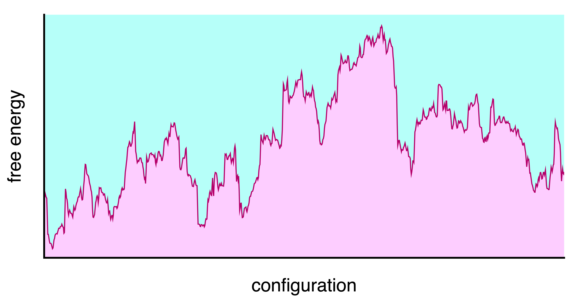
Free energy landscape of a complex system at some temperature T and pressure P
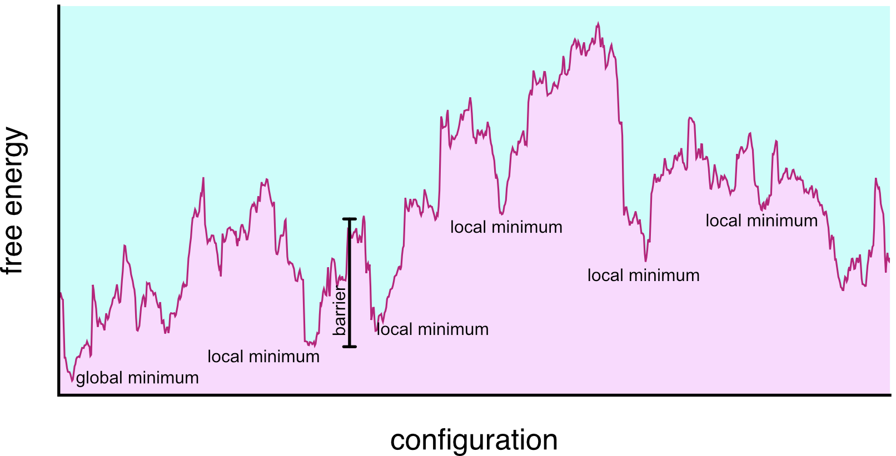
Minima in the free energy landscape
When the temperature allows it, connected minima can be grouped into single basins called metabasins.
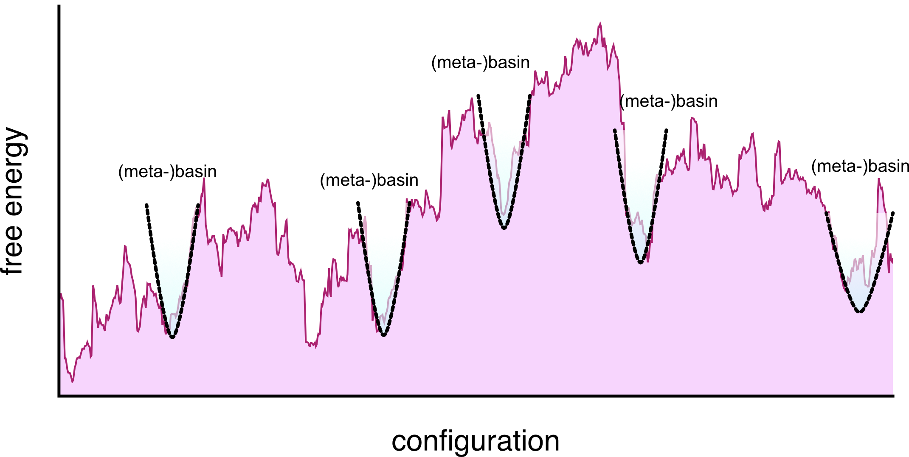
metabasins in the free energy landscape
Different from the total entropy S S(T) = S(T_0) + \int_{T_0}^{T} \frac{1}{T'} \left( \frac{\partial P}{\partial T'} \right)_V dV
or (at constant volume)
S(T) = S(T_0) + \int_{T_0}^{T} \frac{C_V(T')}{T'} dT' where C_V is the heat capacity at constant volume and T_0 is a reference temperature.
For gas, fluids, and liquids at high T only the total entropy is well defined.
As we take liquids to low temperatures, we can separate the total entropy into a vibrational and configurational part and define S_{conf}(T) = S(T) -S_{vib}(T)
For several fluids, this decreases with temperature in an intriguing way.
[…] Perhaps in some instances a thermodynamic “freezing-in” of degrees of freedom does take place as a desperate result of the liquid’s excessive generosity with its limited supply of entropy and energy as its temperature is lowered below the melting point. This would imply the existence of some kind of state of high order for the liquid at low temperature which differs from the normal crystalline state. A plausible structure for such a state seems, however, difficult to conceive, and we believe that the paradox is better resolved in another way […] (W. Kauzmann, Chem. Rev. 43, 219 (1948)).
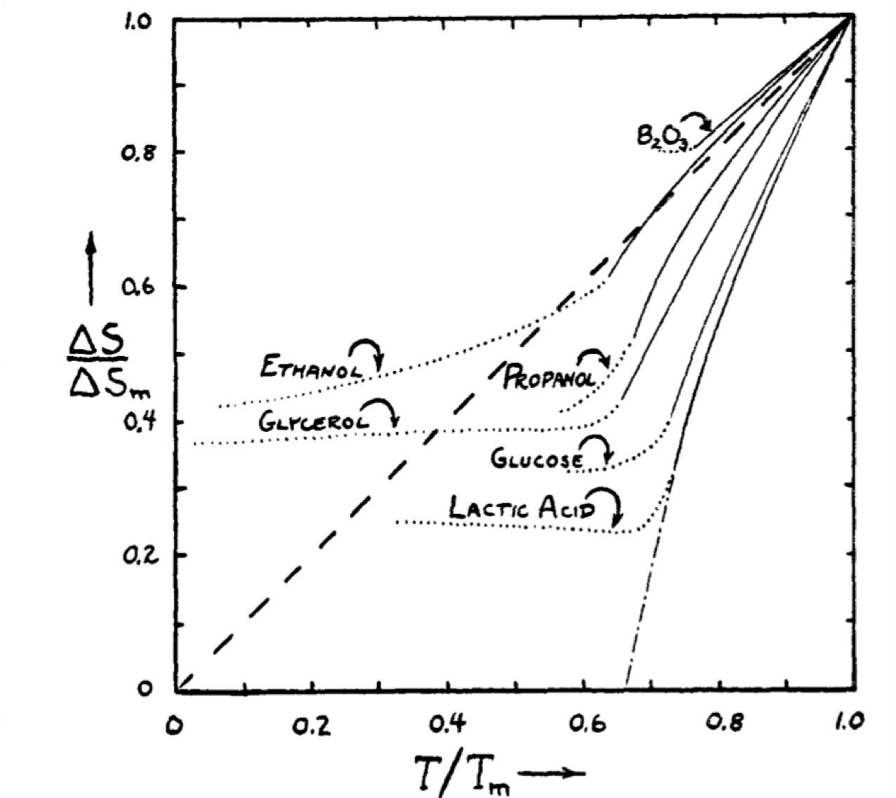
Glassy systems are a broad class of systems, not necessarily atomic or molecular, that exhibit arrested dynamics
| Glassformer | Scale of Constituents | Properties |
|---|---|---|
| Silicate glass | Atomic (Si, O atoms) | Strong, transparent, high melting point |
| Metallic glass | Atomic (metal atoms) | High strength, corrosion resistant, ductile |
| Polymer glass | Macromolecular (polymers) | Flexible, low density, tunable glass transition |
| Colloidal glass | Mesoscopic (colloids, ~nm–μm) | Opaque, tunable rheology, soft solid-like |
| Molecular glass | Molecular (organic molecules) | Low melting point, fragile, optical uses |
| Sugar glass | Molecular (sucrose, glucose) | Brittle, water soluble, low thermal stability |
| Chalcogenide glass | Atomic (S, Se, Te atoms) | Infrared transparency, phase-change memory |
But glassy physics is broader than glassy materials: dense assemblies in general will display glassy dynamics.
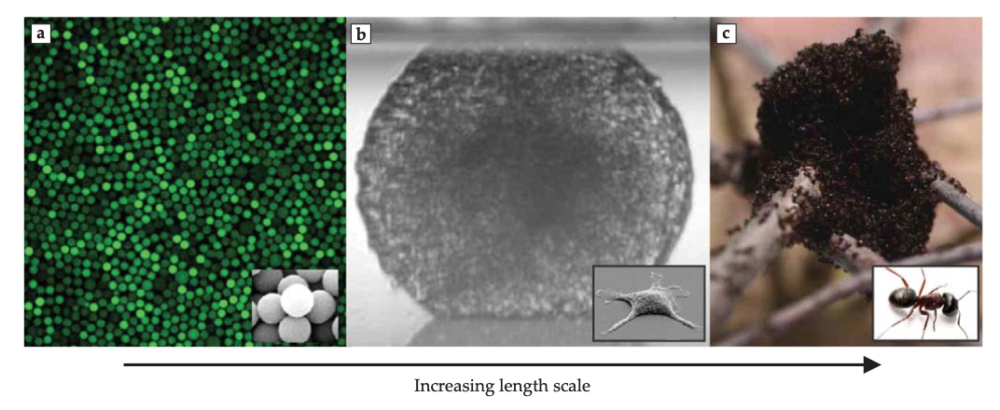
(a) Colloidal glasses, (b) dense cellular tissues, (c) ant colonies from Facets fo glassy physics, Berthier and Ediger, Physics Today (2016)
To form a glass we:
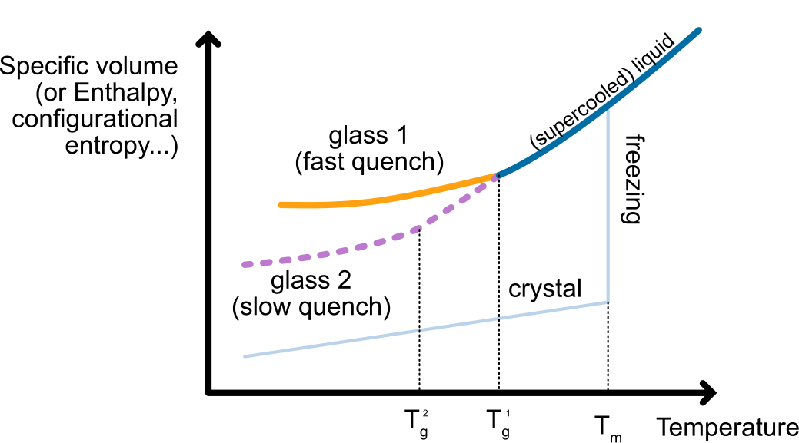
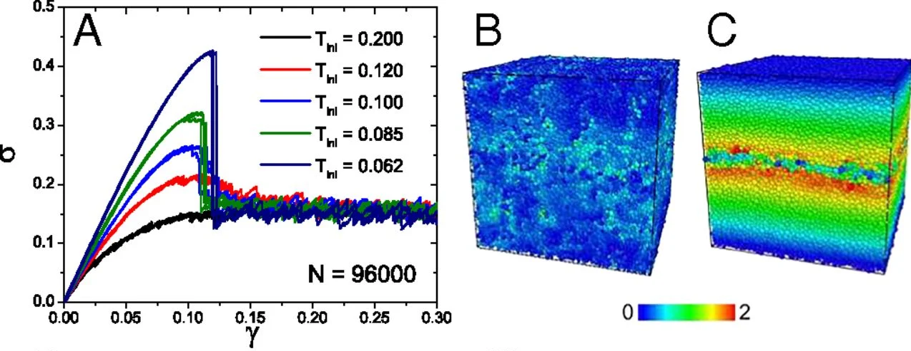
Example of brittle response in a simulated glassy model form Ozawa et al PNAS (2018): (a) stress-strain curves for different preparation temperatures; (b) initial deformation field, (b) final deformation field demonstrating fracture
Their solid-like behavior arises from the dramatic slowing down of their dynamics as they approach the glass transition.
We quantify this with density autocorrelation functions such as the intermediate scattering function: F(k, t) = \frac{1}{N} \left\langle \sum_{j=1}^{N} e^{i \mathbf{k} \cdot [\mathbf{r}_j(t) - \mathbf{r}_j(0)]} \right\rangle
It decays in two steps:
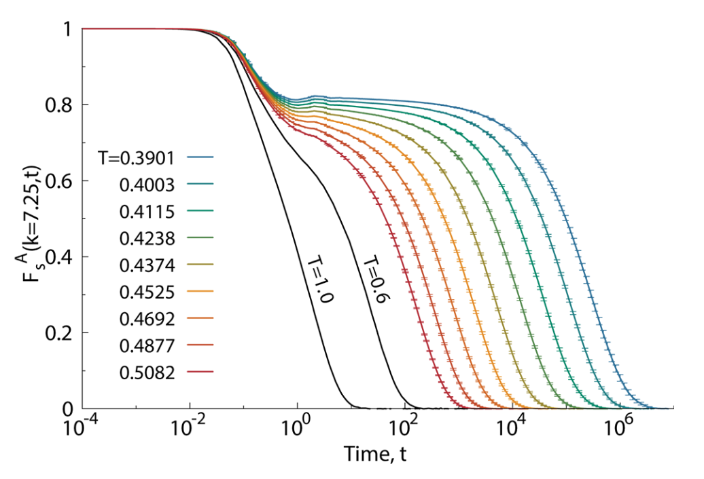
The alpha relaxation time \tau_{\alpha} is proportional to the viscosity \eta and both increase dramatically as the temperature approaches the glass transition temperature T_g.
Phenomenologically one distinguishes between:
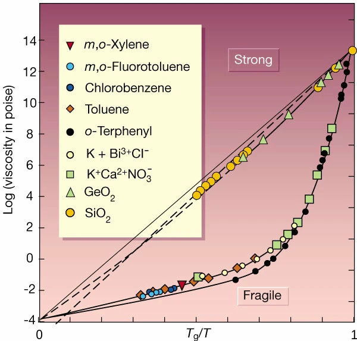
We have however various theories, mainly in two broad classes:
The Adam-Gibbs model links the dramatic slowdown of dynamics to the underlying thermodynamics through configurational entropy S_{\rm conf}.
Mosaic of M_{CRR} independent cooperatively rearranging regions of size n_{CRR} particles each. The total number of particles is N = M_{CRR} n_{CRR}.
We assume that the total configurational entropy is additive and that each CRR contributes a constant amount s_{conf}, irrespective of its size
S_{conf} = M_{CRR} s^* = \dfrac{N}{n_{CRR}} s^*
Rearranging gives the size of a CRR as a function of the configurational entropy per particle S_{conf}/N: n_{CRR}(T) \propto \dfrac{1}{S_{conf}(T)/N}
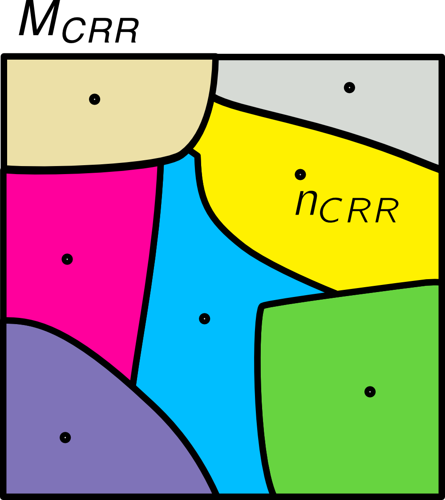
We can then assume that the dynamics is activated with an energy barrier proportional to the size of a CRR:
\Delta E(T) \propto n_{CRR}(T)
From Arrhenius activation, the relaxation time is then
\tau_\alpha(T) = \tau_0 \exp\left(\frac{A}{T S_{\rm conf}(T)}\right)
As temperature decreases, S_{\rm conf} drops, causing \tau_\alpha to increase rapidly. If S_{\rm conf} vanishes at the Kauzmann temperature T_K, relaxation time diverges, reproducing the VFT form: \tau_\alpha(T) \sim \exp\left(\frac{B}{T - T_0}\right) with T_0 \approx T_K. This connects the kinetic slowdown to loss of configurational entropy making the theory thermodynamic.
It also points to a critical divergence: the size of the CRR needs to diverge as we approach T_K to have S_{conf} \to 0.
Dynamical facilitation theory provides an alternative to thermodynamic model. It stems from the observations that glassy systems are universally heterogenous in space and time: their mobility is very broadly distributed, with regions of high mobility coexisting with regions of low mobility.
This dynamical coexistence is called dynamical heterogeneity and can be formalised as a dynamical phase transition.
Key idea: Mobility facilitates more mobility
Temperature dependence:
The relaxation time follows a parabolic law \log \tau_\alpha(T) \sim J^2 \left( \frac{1}{T} - \frac{1}{T_0} \right)^2
Unlike VFT, no finite-temperature divergence, no criticality, but still captures super-Arrhenius behavior.
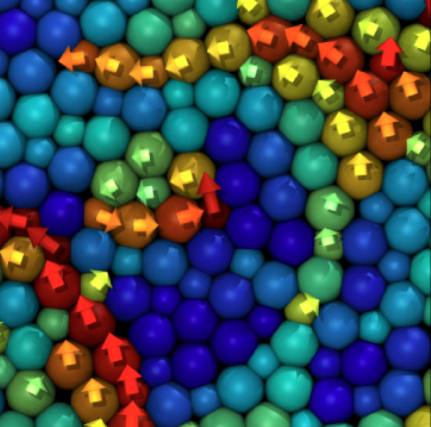
Time evolution of the magnitude of the displacement field in a model of glass governed by dynamical facilitation from Hasym and Mandadapu PNAS (2024):
Excitations emerge and trigger further mobility in their vicinity, leading to a cascade of relaxation events.
Ongoing work to unify the various scenarios.
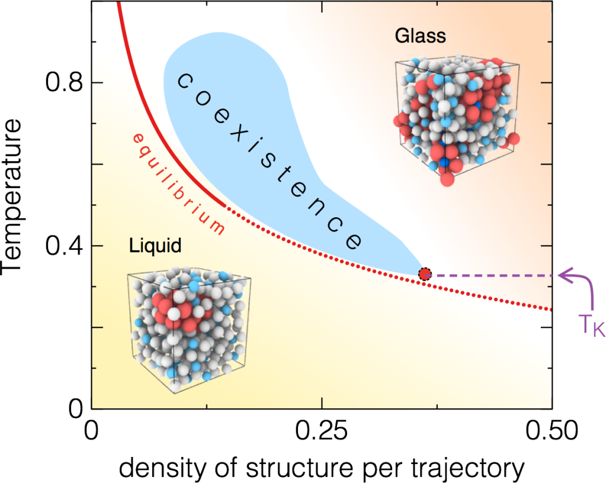